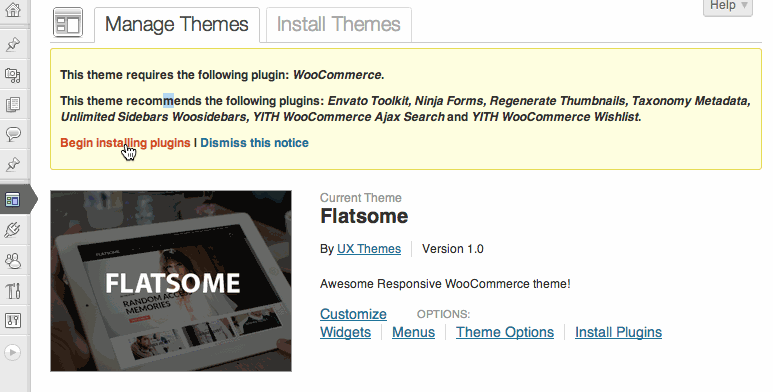
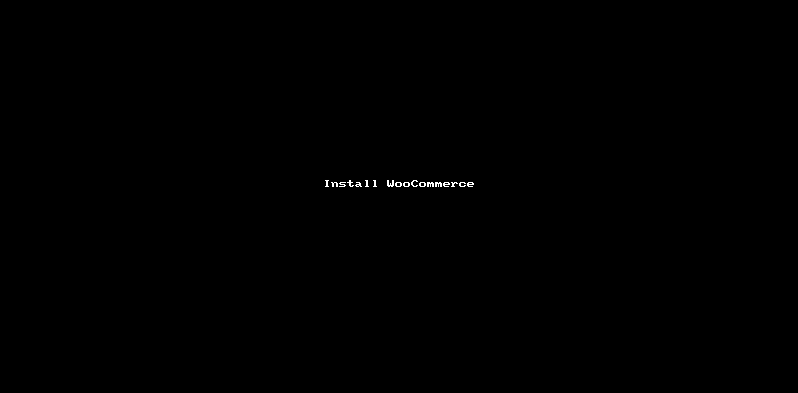
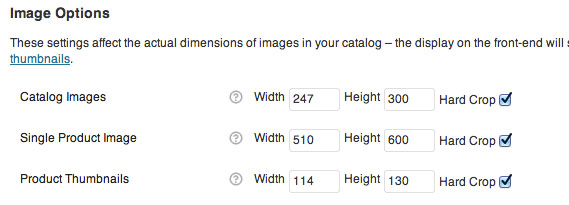
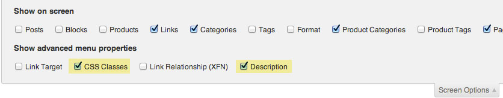
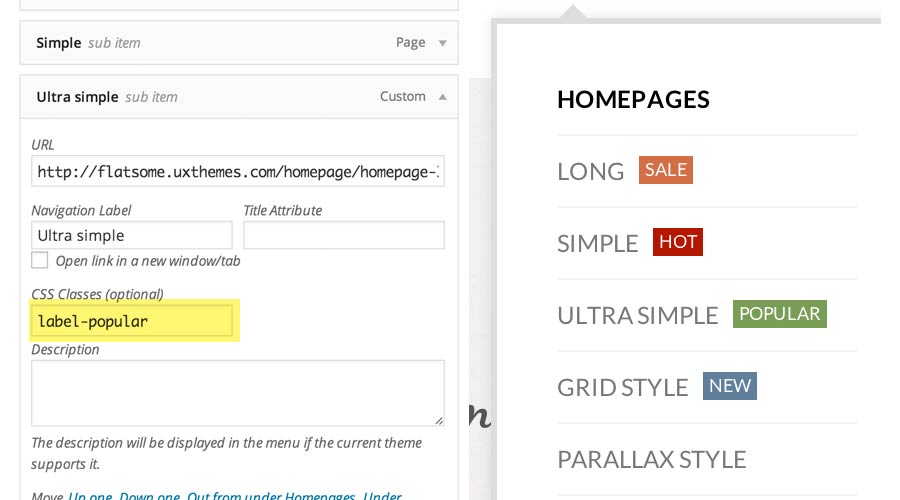
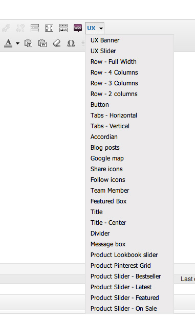

This document covers the installation and use of this theme and often reveals answers to common problems and issues - I encourage you to read this document thoroughly if you are experiencing any difficulties. If you have any questions that are beyond the scope of this document, feel free to send us a support ticket
| Docs version | 2.0 |
| Last Update | 19/09/2014 |
| Created by | UX Themes |
| Online Demo | http://flatsome.uxthemes.com |
To install this theme you must have a working version of WordPress already installed. For information in regard to installing the WordPress platform, please see the WordPress Codex - http://codex.wordpress.org/Installing_WordPress When you are ready to install a theme, you must first upload the theme files and then activate the theme itself. The theme files can be uploaded in two ways:
Once the theme is uploaded, you need to activate it. Go to Appearance > Themes and activate your chosen theme.
This theme comes bundled with many plugins. Some are required and some are optional.
Install all bundled plugins
Once plugins are installed, they need to be activated at Plugins > Installed plugins
Install WooCommerce pages
Change image sizes
This theme uses image sizes other than WooCommerce normal sizes. Go to WooCommerce > Settings > Products and change sizes to these:

Note: You dont have to use the same heights. But its recommended to use the same widths
Regenerate thumbnails
After image sizes are set, you'll need to resize all images. We can do this automaticly with the plugin: "Regenerate Thumbnails".
You'll need to install "Regenerate Thumbnails" if you cant find it under Tools.
The theme comes with a .xml file containing demo content you can import into your WordPress site. This will help you get started, in case you are running on a fresh WordPress installation with no content at all.
Here is a list of pages templates that are included in this theme
- Default content template with a title top left.
- Default content template with no title. Useful if you want a homepage thats inside a container (not full-width)
- 100% width template. Use this if you want to have sliders or content that goes all the way to screen edges
- Default content with a left sidebar
- Default content with a right sidebar
- template that includes the My Account navigation in sidebar. It also has a nice image of loged in user top-left. Use this template for Account pages.
- Use this for Cart and Checkout page. This template adds a nice Checkout breadcrumb to the top.
This theme has 4 menu locations
This is main navigation thats located in the header
This is located at the top bar. This menu does not support dropdown
This is located at the bottom above copyright text. This menu does not support dropdown"
This menu is visible for logged in users at the left of mini cart. Menu is also located at the my account page template.
This theme has a built-in multi column menu system. Menus are created using the core WordPress Menu manager. These images shows how you should structure your menus.
You need to enable these checkboxes to view field for CSS classes and Description:
Add these CSS classes to your menu setting to get labels:
Avaible classes: "label-new" , "label-sale", "label-popular", "label-hot"
We strongly belive in Shortcodes and we built the theme around shortcodes. All layouts, banners, sliders etc. are built using shortcodes. You'll find alot of shortcode examples by browsing the theme demo. These codes can be copy and pasted into the page editor. A simple shortcode inserter is also included.
Let you create amazing responsive banners
Demo / ExamplesLet you create amazing responsive sliders
Demo / ExamplesUsed to display [ux_banners] in a beautiful grid.
Demo / ExamplesUsed to create columns inside pages and posts and banner grid
Used to create rows for columns
Displays a beautiful blog post slider
Demo / ExamplesDisplays a button
Demo / ExamplesHighlight features of your shop
Demo / ExamplesDisplays a google map
Demo / ExamplesLet you create amazing responsive sliders
Demo / ExamplesCreates a simple message box. Add any content inside box.
Demo / ExamplesCreates a large beautiful scrollable lookbook of selected category
Demo / ExamplesCreates a pintrest style grid of a selected product category.
Demo / ExamplesCreates a nice slider of bestsellers
Demo / ExamplesCreates a nice slider of featured products
Demo / ExamplesCreates a nice slider of products on sale
Demo / ExamplesCreates a nice slider of new products
Demo / ExamplesCreates a row of social icons that lets visitor share current page.
Demo / ExamplesCreates a row of social icons with selected links to popular social networks
Demo / ExamplesCreates horizontal tabbed content
Demo / ExamplesCreates vertical tabbed content
Demo / ExamplesCreates a nice introduction box of a team member
Demo / ExamplesAdd testemonials
Demo / ExamplesAdds a nice section title
Demo / ExamplesAdds a nice divider
Demo / ExamplesUX Banners are responsive animated banners used for slides and banners. Banners like this is the future of eCommerce banners. The banners are structured like this: [ux_Banner] HTML content [/ux_banner]
[ux_banner bg="http://imageurl" height="560px" link="" animation="flipInX" text_align="center" text_pos="center" text_color="light" text_width="80%" hover="zoom"] CONTENT [/ux_banner]
| bg: | Enter background image URL or #hex code | |
| height: | Height of banner. Width is 100% and adjusted to the container banner is inserted into. | |
| link: | Enter where banner should be linked | |
| animation: | Available text animations: fadeIn, fadeInLeft, fadeInRight, fadeInUp, fadeInDown, fadeInUpBig, fadeInDownBig, fadeInLeftBig, fadeInRightBig, flipInX, flipInY, bounceIn, bounceInDown, bounceInLeft, bounceInRight, rotateInUpLeft, rotateInUpRight, rotateInDownRight | |
| text_align: | Enter align of text. left, right or center | |
| text_pos: | Enter where text should be positioned on the banner left, right or center | |
| text_color: | Choose between light or dark text color. | |
| text_color: | Choose between light or dark text color. | |
| text_width: | Change the width of the text container | |
| hover: | Add hover effect. Available effects: zoom, fade | |
| parallax: | Creates a parallax effect to the banner. parallax="1" is weak effect, and parallax="9" is strong effect. Select any number between. | |
| effects: | Adds an effect overlay to the banners. Avaible: snow, sliding-glass, confetti, sparkle | |
| video_mp4: , video_ogv: , video_wbm:, | Adds a background video to the banner. You only need to use one of the parameters, but recommended to use all. |
UX Sliders are inserted with a Shortcode Generator. Its possible to slide almost anything by wrapping [ux_slider] [/ux_slider] around the content. Slides can be shortcodes, divs or images.
[ux_slider timer="4500" arrows="false/true" bullets="false/true" auto_slide="false/true" hide_nav="false/true" nav_color="dark/light"] SLIDES [/ux_slider]
| timer: | Change how long each slide lasts if auto_slide is true. 45000 = 4,5 secounds | |
| arrow: | Show arrows or not (true/false) | |
| bullets: | Show bullets or not (true/false) | |
| auto_slide: | Auto slide or not (true/false) | |
| hide_nav: | Hide nav before mouse hover (true/false) | |
| nav_color: | Light or dark bullets and arrows (light/dark) |
Here is a list of pages templates that are included in this theme
The default sidebar visible on Blog and Pages with sidebar template
Sidebar for shop category pages. Visible if category with sidebar is selected in Theme Option Panel
Top footer. Only visible if widget is added. Add a widget to create a column. 4 widgets = 4 columns.
Bottom footer. Only visible if widget is added. Add a widget to create a column. 4 widgets = 4 columns
Footer payment images is just html added in Theme Option Panel under > Footer. Add any text or image here
Displays a list of recents blog posts
The block postype let you create "HTML Blocks" that can be inserted to pages, widgets, and Theme Options using Shortcodes. An example could be to create the homepage slider as a "Block" and insert it to the homepage page with a shortcode like [block id="homepage-slider]
Featured Item Post type lets you create "portfolio" style pages. This can be used to create lookbooks, or feature your products in various ways. Featured Items can be grouped in categories.
To display the featured items you need to create new a page and select a "Featured Items" template.
TIP: To create a image slider simply insert images and wrap [ux_slider] shortcode around the images.
Newsletter box seen on demo page is powered by "Ninja forms". We have included a example form you can import into ninja forms and add to footer.
Follow these steps to add payment icons:
Go to Theme Option Panel > Catalog Mode to enable Catalog mode
TIP: Adding an Enquery form to product page
[accordion] [accordion-item title="Send us an enquiry"] [ninja_forms_display_form id=4] [/accordion-item] [/accordion]
TIP: Adding search or social icons to header
Go to Theme Option Panel > Catalog Mode and look for "Cart / Account replacement"
To get a search field enter this:
[search]
To get a social icons enter this:
[follow twitter="http://twitter.com/uxthemes" facebook="http://facebook.com/uxthemes"
email="post@email.com" pinterest="http://pinterest.com/uxthemes"]
The easiest way to translate this theme is to use "Codestyling Localization" plugin. http://wordpress.org/plugins/codestyling-localization/. Install that plugin and follow these steps:
Learn more about translating WooCommerce here: http://docs.woothemes.com/document/woocommerce-localization/
Content added to the "Excerpt" box gets placed on top of pages outside of the selected page template. This lets you make nice full width top banners.
First create a page and insert the shortcode [yith_wcwl_wishlist]. Using the "My account" template is recommended. Select this page in WooCommerce > Settings > Pages > Wishlist Page.
Adding a banner or HTML content to a category header requires the plugin: Taxonomy Metadata. Follow these steps to add a Top banner to category pages:
The newsletter link shown on demo page is just a normal menu item combined with [lightbox] shortcode. Here is how to make it:
Go to Theme Option > HTML Blocks and add this to "HTML after footer":
[lightbox id="newsletter-popup" padding="0px" width="600px"]
[ux_banner bg="http://bgurl" height="400px" link="" animation="fadeInLeft" text_align="left" text_pos="left top" text_color="dark" text_width="40%"]
h3>Signup for our Newsletter!/h3>
____
[ninja_forms_display_form id=1]
[/ux_banner]
[/lightbox]
Get your ninja forms shortcode from wp-admin > Forms
Please note: make a backup of the theme prior to updating.
The theme is located in wp-content/themes/flatsome.
Go to http://themeforest.net/downloads to download latest version of the theme. The theme is located inside the downloaded zip in "Theme files" folder.
Unzip the theme zip file (flatome.zip) into wp-content/themes/ folder. Make sure this folder is named "flatsome" (replace with old).
It seems scary but you really won’t loose any of your data. The only exception is if you have made edits to theme files like header.php, footer.php etc. These changes will need to made again to the new files. But all of your content and theme settings are preserved.
Alternatively, you may want to use a plugin to automate backing up your current theme and uploading the new version: http://wordpress.org/extend/plugins/easy-theme-and-plugin-upgrades/